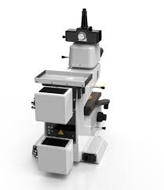
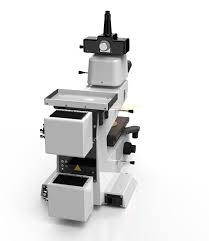
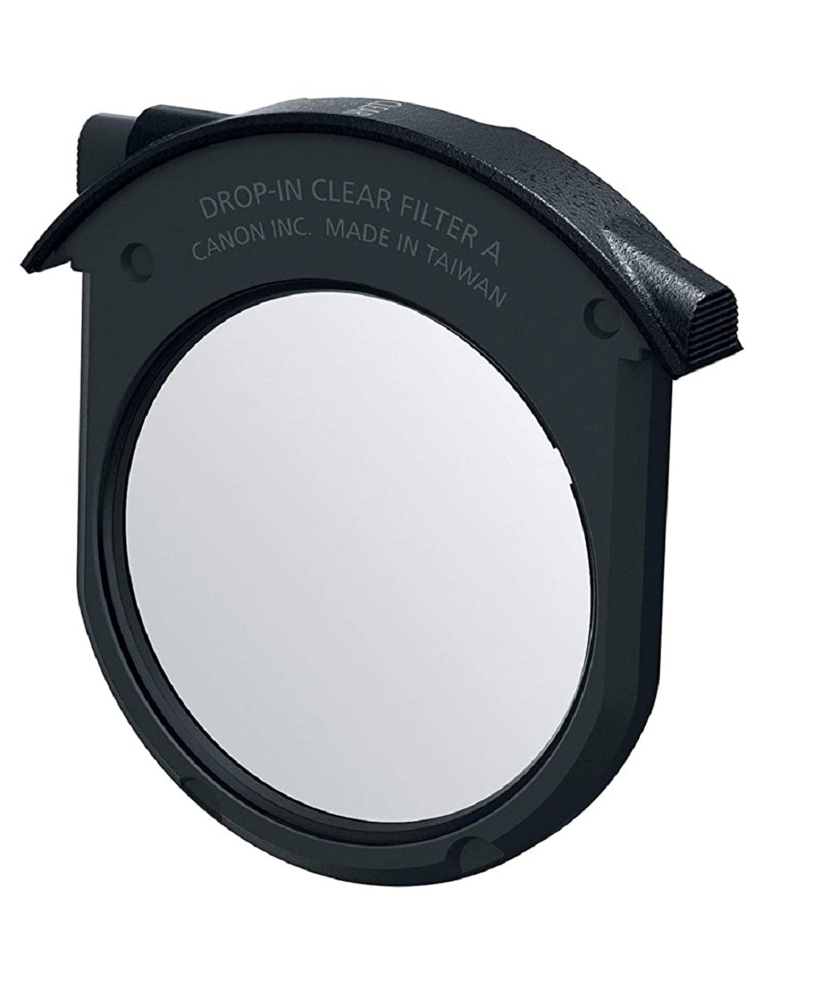
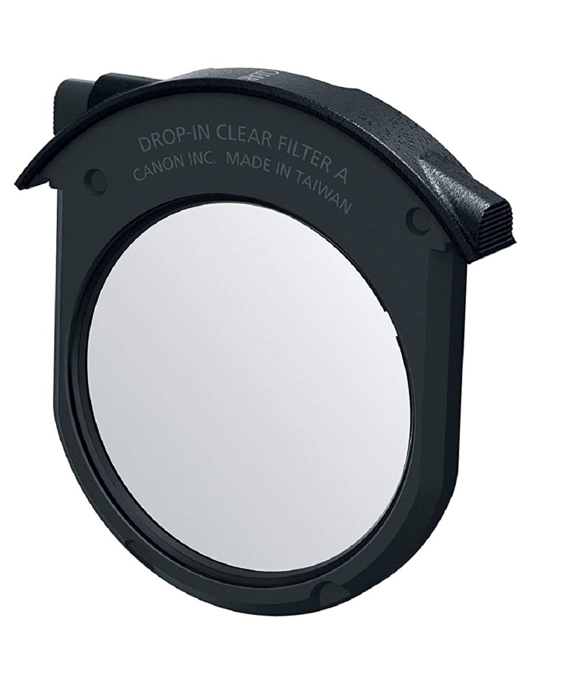

 


На рисунке показана схема установки для исследования поляризации света. На оптической скамье 1 размещены: источник света 2 (полупроводниковый лазер), который через блок питания 3 подключается в сеть; анализатор-поляроид 4, заключенный в оправу, способную вращаться вокруг луча лазера (угол поворота численно равен углу поворота плоскости пропускания анализатора и измеряется по шкале, нанесенной на оправе); фотоэлемент 5, соединенный с микроамперметром 6 (сила фототока, измеряемая микроамперметром, пропорциональна интенсивности света, выходящего из анализатора).
Для получения эллиптически поляризованного света на оптической скамье дополнительно размещают закрепленный в рамке деформируемый с помощью винта 7 образец 8, соединенный с тензометрическим датчиком 9. Цифровые показания тока разбалансировки Δi, регистрируемые датчиком, пропорциональны величине механического напряжения σ в образце.